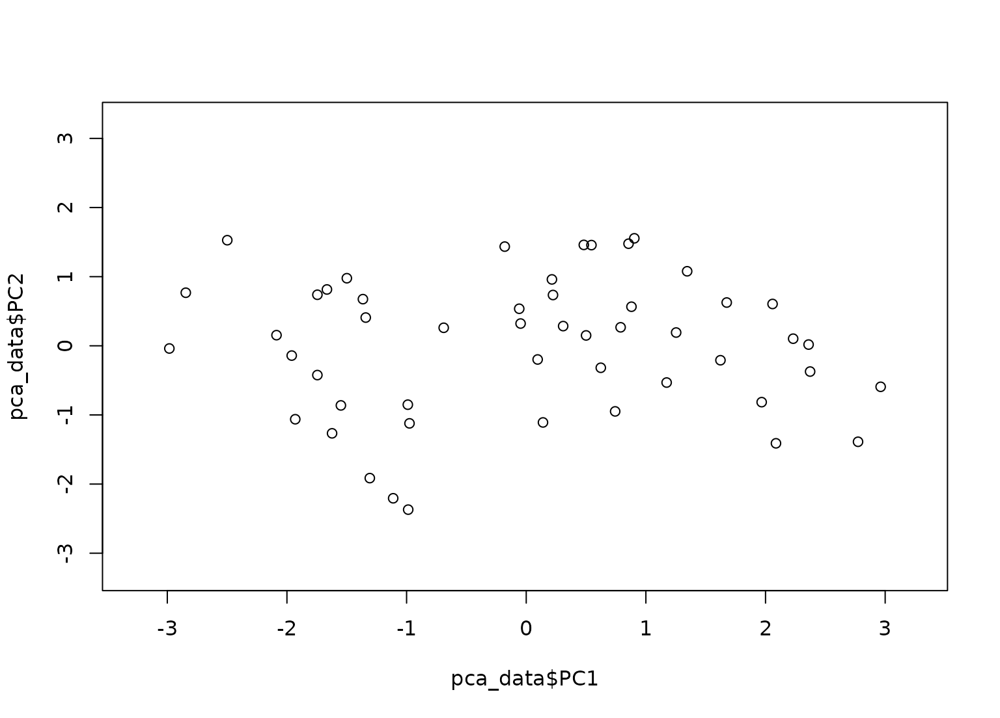

step_pca creates a specification of a recipe step
that will convert numeric data into one or more principal
components.
step_pca( recipe, ..., role = "predictor", trained = FALSE, num_comp = 5, threshold = NA, options = list(), res = NULL, prefix = "PC", skip = FALSE, id = rand_id("pca") ) # S3 method for step_pca tidy(x, type = "coef", ...)
| recipe | A recipe object. The step will be added to the sequence of operations for this recipe. |
|---|---|
| ... | One or more selector functions to choose which
variables will be used to compute the components. See
|
| role | For model terms created by this step, what analysis role should they be assigned?. By default, the function assumes that the new principal component columns created by the original variables will be used as predictors in a model. |
| trained | A logical to indicate if the quantities for preprocessing have been estimated. |
| num_comp | The number of PCA components to retain as new
predictors. If |
| threshold | A fraction of the total variance that should
be covered by the components. For example, |
| options | A list of options to the default method for
|
| res | The |
| prefix | A character string that will be the prefix to the resulting new variables. See notes below. |
| skip | A logical. Should the step be skipped when the
recipe is baked by |
| id | A character string that is unique to this step to identify it. |
| x | A |
| type | For the |
An updated version of recipe with the new step
added to the sequence of existing steps (if any). For the
tidy method, a tibble with columns terms (the
selectors or variables selected), value (the
loading), and component.
Principal component analysis (PCA) is a transformation of a group of variables that produces a new set of artificial features or components. These components are designed to capture the maximum amount of information (i.e. variance) in the original variables. Also, the components are statistically independent from one another. This means that they can be used to combat large inter-variables correlations in a data set.
It is advisable to standardize the variables prior to running
PCA. Here, each variable will be centered and scaled prior to
the PCA calculation. This can be changed using the
options argument or by using step_center()
and step_scale().
The argument num_comp controls the number of components that
will be retained (the original variables that are used to derive
the components are removed from the data). The new components
will have names that begin with prefix and a sequence of
numbers. The variable names are padded with zeros. For example,
if num_comp < 10, their names will be PC1 - PC9.
If num_comp = 101, the names would be PC001 -
PC101.
Alternatively, threshold can be used to determine the
number of components that are required to capture a specified
fraction of the total variance in the variables.
Jolliffe, I. T. (2010). Principal Component Analysis. Springer.
rec <- recipe( ~ ., data = USArrests) pca_trans <- rec %>% step_center(all_numeric()) %>% step_scale(all_numeric()) %>% step_pca(all_numeric(), num_comp = 3) pca_estimates <- prep(pca_trans, training = USArrests) pca_data <- bake(pca_estimates, USArrests) rng <- extendrange(c(pca_data$PC1, pca_data$PC2)) plot(pca_data$PC1, pca_data$PC2, xlim = rng, ylim = rng)with_thresh <- rec %>% step_center(all_numeric()) %>% step_scale(all_numeric()) %>% step_pca(all_numeric(), threshold = .99) with_thresh <- prep(with_thresh, training = USArrests) bake(with_thresh, USArrests)#> # A tibble: 50 x 4 #> PC1 PC2 PC3 PC4 #> <dbl> <dbl> <dbl> <dbl> #> 1 -0.976 1.12 -0.440 0.155 #> 2 -1.93 1.06 2.02 -0.434 #> 3 -1.75 -0.738 0.0542 -0.826 #> 4 0.140 1.11 0.113 -0.181 #> 5 -2.50 -1.53 0.593 -0.339 #> 6 -1.50 -0.978 1.08 0.00145 #> 7 1.34 -1.08 -0.637 -0.117 #> 8 -0.0472 -0.322 -0.711 -0.873 #> 9 -2.98 0.0388 -0.571 -0.0953 #> 10 -1.62 1.27 -0.339 1.07 #> # … with 40 more rows#> # A tibble: 1 x 4 #> terms value component id #> <chr> <dbl> <chr> <chr> #> 1 all_numeric() NA NA pca_PMvd9#> # A tibble: 16 x 4 #> terms value component id #> <chr> <dbl> <chr> <chr> #> 1 Murder -0.536 PC1 pca_PMvd9 #> 2 Assault -0.583 PC1 pca_PMvd9 #> 3 UrbanPop -0.278 PC1 pca_PMvd9 #> 4 Rape -0.543 PC1 pca_PMvd9 #> 5 Murder 0.418 PC2 pca_PMvd9 #> 6 Assault 0.188 PC2 pca_PMvd9 #> 7 UrbanPop -0.873 PC2 pca_PMvd9 #> 8 Rape -0.167 PC2 pca_PMvd9 #> 9 Murder -0.341 PC3 pca_PMvd9 #> 10 Assault -0.268 PC3 pca_PMvd9 #> 11 UrbanPop -0.378 PC3 pca_PMvd9 #> 12 Rape 0.818 PC3 pca_PMvd9 #> 13 Murder 0.649 PC4 pca_PMvd9 #> 14 Assault -0.743 PC4 pca_PMvd9 #> 15 UrbanPop 0.134 PC4 pca_PMvd9 #> 16 Rape 0.0890 PC4 pca_PMvd9